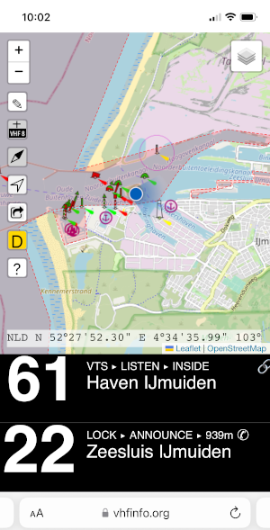
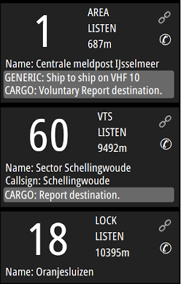
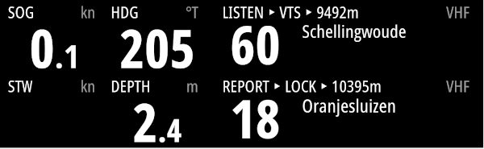

Ever had to lookup the VHF channel to tune into for a bridge, a lock or a VTS?
Did you also feel the information is not easily found, especially when crossing borders? VHFinfo.org is here to help.
The goal of this initiative is to make the VHF information readily available to you in a form that suits your need.
By storing the data behind vhfinfo.org in GitHub, the information is open to anyone who wants to use it.
Viewing
Mobile website
One way to access the vhfinfo.org information is by using the mobile friendly online map.Using your phone's GPS coordinates, this will allow you to see which channels are nearby or even in front of you if the phone's compass can be used.

SignalK plugin webapp
Using the SignalK VHFinfo plugin you can access the same information without the need for an internet connection.Through the plugin's webapp you can use your phone to show the information gatherd by the plugin, using your boat's GPS coordinates and heading.
The plugin allows you to configure the search beam length and angle.

SignalK plugin in combination with custom display
Another way to show the information is using another SignalK plugin that allows you to setup an instrument panel on any (browser) display.
Adding or editting information
To add new information to the map or edit existing information you can go to the map.Lookup the area you want to contribute to and press the pencil button.